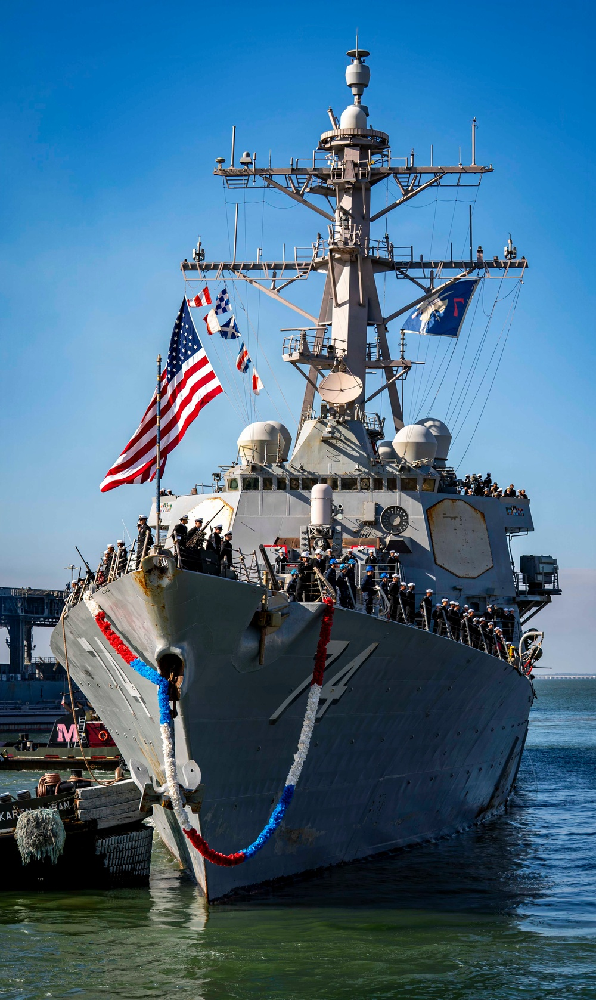

Mass Communication Specialist 2nd Class Pierce Luck · DVIDS 10043769 · Public domain · USS McFaul (DDG 74) pulls into Naval Station Norfolk, Oct. 23, 2026.
DVIDS
USS McFaul pulled into Norfolk after a deployment to 5th and 6th Fleet
A Navy photograph posted Sunday shows the Arleigh Burke-class guided-missile destroyer USS McFaul (DDG 74) pulling into Naval Station Norfolk on Oct. 23. The caption says the homecoming closes a deployment to the U.S. 5th and 6th Fleet areas of operations. USNI News reported Friday that the ship had been gone 332 days, most of that time in the Middle East, after leaving Norfolk on Nov. 25. The photo page does not list a crew count or a port-call tally.
DVIDS · Read source →